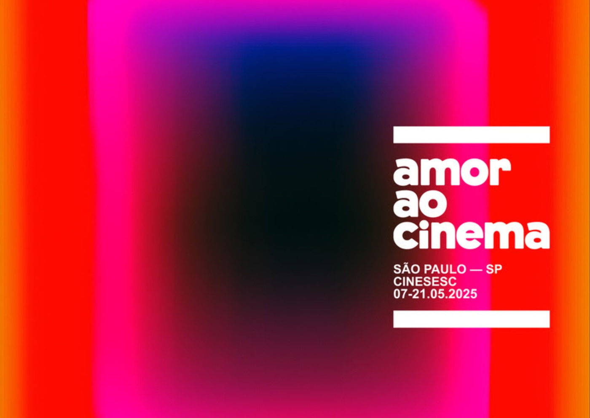

Mostra “Amor ao Cinema” chega à terceira edição com sessões presenciais e online de 7 a 21 de maio

Realizada pelo Sesc São Paulo, a programação acontece no CineSesc e na plataforma Sesc Digital e reúne filmes premiados, atividades formativas e debates sobre a cinefilia e a linguagem cinematográfica
Entre os dias 7 e 21 de maio, o Sesc São Paulo realiza a terceira edição da Mostra Amor ao Cinema, um evento que reafirma a paixão pela sétima arte por meio de uma extensa programação com sessões presenciais no CineSesc, exibições online na plataforma Sesc Digital, encontros com especialistas, oficinas e cursos.
A sessão de abertura será gratuita e acontece no dia 7 de maio (terça-feira), às 20h, com a exibição de “Volveréis”, longa inédito no Brasil, dirigido por Jonás Trueba, premiado na Quinzena dos Realizadores do Festival de Cannes. Os ingressos poderão ser retirados na bilheteria do CineSesc a partir das 19h.
Homenagem à cinefilia e ao ofício do cinema
Com curadoria voltada à reflexão sobre a linguagem cinematográfica, a mostra reúne 38 filmes presenciais e 12 títulos online, todos com forte diálogo sobre a arte do cinema e seus profissionais, propondo um panorama das transformações narrativas, técnicas e culturais que marcaram a história do audiovisual.
Entre os destaques estão clássicos como:
Close-Up (Abbas Kiarostami, em 35mm)
Fedora (Billy Wilder)
Splendor (Ettore Scola)
Os Sonhadores (Bernardo Bertolucci, em cópia restaurada em 4K)
O que Terá Acontecido a Baby Jane? (Robert Aldrich)
Cinema brasileiro em foco
A produção nacional tem presença expressiva com títulos inéditos e consagrados como:
Mambembe (Fábio Meira)
Estranho Caminho (Guto Parente)
A Transformação de Canuto (Ariel Kuary Ortega e Ernesto Carvalho)
A Rocha que Voa (Eryk Rocha)
Curtas como Dois Nilos (Samuel Lobo e Rodrigo de Janeiro) e Quebra Panela (Rafael Anaroli)
Filmes sobre cineastas e críticos
A mostra também destaca retratos e documentários sobre grandes nomes da história do cinema, como:
Jean Cocteau (Lisa Immordino Vreeland)
Fellini, Confidências Revisitadas (Jean-Christophe Rosé)
Michel Gondry – Faça Você Mesmo (François Nemeta)
Pauline Kael – O Que Ela Disse (Rob Garver)
Pedro Almodóvar – O Rebelde de La Mancha (Catherine Ulmer Lopez)
Miyazaki – O Espírito da Natureza (Léo Favier)
Faixa "Rupturas": cinema em transformação
Com foco na experimentação estética, a mostra apresenta a faixa "Rupturas", com filmes que desafiam formatos narrativos, como:
Jeanne Dielman (Chantal Akerman)
Shaft (Gordon Parks, em 4K)
Tangerine (Sean Baker)
Festa de Família (Thomas Vinterberg, marco do Dogma 95)
Sesc Digital: cinema ao alcance de todos
A plataforma Sesc Digital exibe gratuitamente títulos como:
Carmen Miranda – Bananas is My Business (Helena Solberg)
Cinema Novo (Eryk Rocha)
Janela da Alma (João Jardim e Walter Carvalho)
Pasolini (Abel Ferrara)
My Name is Alfred Hitchcock (Mark Cousins)
Os filmes estão disponíveis para todo o território nacional pelo site sescsp.org.br/sescdigital e aplicativos nas lojas Google Play e App Store.
Atividades formativas: cursos e oficinas
A mostra também oferece oficinas e cursos presenciais e online com especialistas:
Presenciais:
3x Tonacci: Cópias Restauradas – com Cristina Amaral e Thiago B. Mendonça
Oficina de Direção de Atores – com Pedro Freire (Malu)
Online:
Mulheres Protagonistas na Era de Ouro de Hollywood – com Isabel Wittmann
A Cinefilia: da Nouvelle Vague às Redes Sociais – com Bruno Carmelo
As inscrições são feitas pelo site de cursos do Sesc SP. As vagas são limitadas e a classificação indicativa é 16 anos.
Programação infantil: CineClubinho
Domingos no CineSesc recebem sessões do CineClubinho, com animações russas (curtas e longa) dubladas ao vivo e atividades lúdicas gratuitas no saguão, voltadas à formação de novos espectadores.
SERVIÇO
Mostra Amor ao Cinema – 3ª Edição 📍 CineSesc – Rua Augusta, 2075 – Cerqueira César, São Paulo/SP
📲 Sesc Digital – sescsp.org.br/sescdigital (site e aplicativo)
📅 De 7 a 21 de maio
🎟️ Ingressos presenciais: R$ 10 (valor único)
🎬 Abertura: 7 de maio, às 20h – Volveréis (Jonás Trueba) – entrada gratuita
🎓 Cursos e oficinas: inscrições no portal de cursos do Sesc SP
👤 Classificação: 14 anos para a maioria das sessões
Mais informações: sescsp.org.br | @sescsp